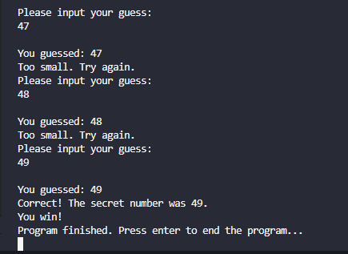
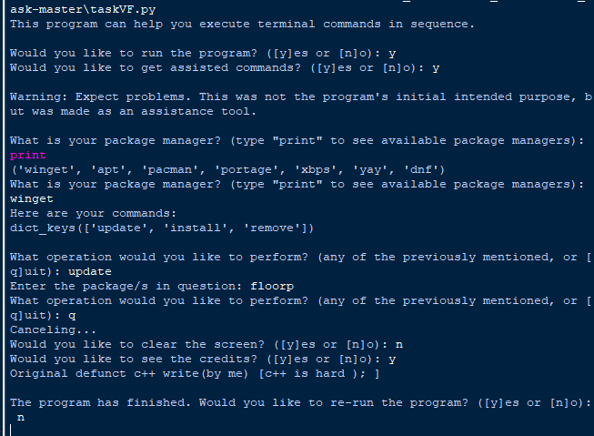
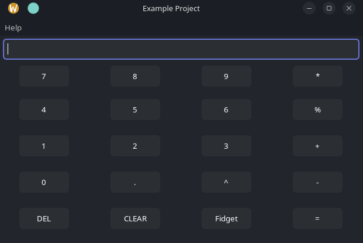

This is my portfolio of public programming projects that I have undertaken. Click on any of the images to check out the afformentioned projects.
This is my portfolio of public programming projects that I have undertaken. Click on any of the images to check out the afformentioned projects.
A minor project of mine is mostly a display of my ability to learn new programming languages if neccessary. It is a simple text based number guessing game written in Rust while following along with the Rust programming book.

A big python project of mine is one that was required of me as part of my create performance task. It is a program that takes system commands and executes them sequentially. It even has built-in package management commands to help those that do not yet understand the syntax and interface to interact with their system package manager.

By far my biggest project is my gui calculator programmed in native c++ with wxWidgets. It is still a work in progress, but it can be compiled to both windows and linux, so long as you are compiling on linux and have cross compilation tools installed. It is by far my best display of understanding towards the underlying logic and architecture of computer resources, and displays my ability to pull off programming tasks of exponential complexity and difficulty. Go ahead and check it out.
